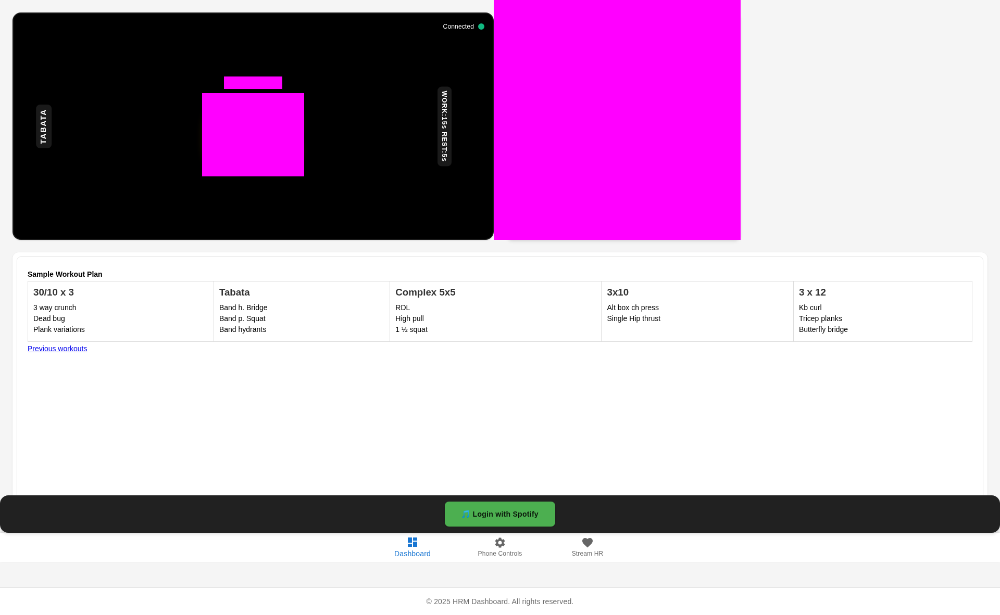

Real-Time Heart Rate Zones
Stream Bluetooth Low Energy (BLE) devices directly to your browser. No server storage. 100% Privacy.
Launch Dashboard
How It Works
1
Open Connection Hub
Open the app in a Chrome-based browser. Enter your name and age to calculate your Max HR zones automatically.

2
Pair Device
Click "Connect Bluetooth HRM". Select your Heart Rate Monitor from the browser's pairing menu. Status will turn green.

3
Sync & Track
View real-time zones while you run. When finished, use "Connect with Strava" to upload your activity analysis.